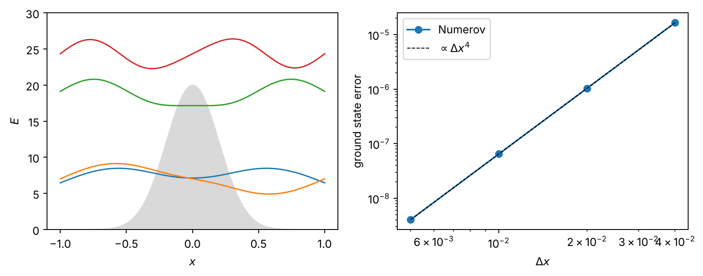
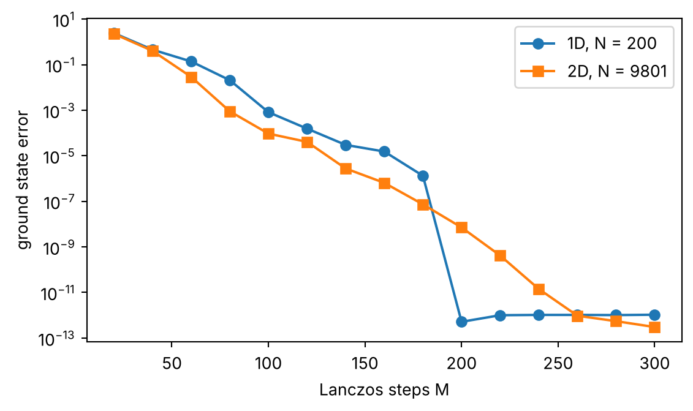
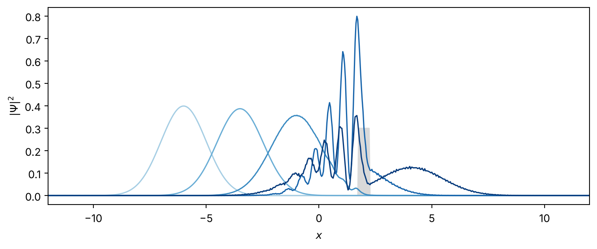

def numerov(f, psi0, psi1, dx, phi0=None):
"""Integrate psi'' = f psi on a grid, given f on the grid and the first two values of psi.
phi0 overrides (1 - dx^2 f_0 / 12) psi_0, which matters when f_0 psi_0 has a finite limit (@sec-hydrogen)."""
c = 1 - dx**2 * f / 12
psi = np.empty(len(f))
psi[0], psi[1] = psi0, psi1
phi_prev = c[0] * psi0 if phi0 is None else phi0
phi = c[1] * psi1
for k in range(1, len(f) - 1):
phi_prev, phi = phi, 2 * phi - phi_prev + dx**2 * f[k] * psi[k]
psi[k + 1] = phi / c[k + 1]
return psi4 The Schrödinger Equation
This last chapter is about quantum mechanics, and it’s where a lot of the tools from the earlier chapters come back (the Verlet trick of adding Taylor expansions, bisection, Hermitian matrices, the splitting idea behind leapfrog) and get used on a problem where they really pay off. We’ll start in one dimension, where the Schrödinger equation is basically an ODE and we can solve it to ridiculous accuracy by shooting, then move on to variational methods, which is how most real calculations for atoms, molecules and solids are actually done, then to grids and the Lanczos method for huge sparse matrices, and finally to time evolution. Throughout we use units with \(\hbar = m = 1\) (atomic units, if you like), so the kinetic energy is \(-\tfrac{1}{2}\nabla^2\).
Setup: imports and the helper used by the exercise checks
# [Setup] Run once. Imports what this chapter uses and defines the helper that every check cell calls.
import math
import numpy as np
import matplotlib.pyplot as plt
from scipy import linalg
def check(name, test):
"""Run test(), which returns True or False, and report the result without ever raising."""
try:
ok = test()
except NotImplementedError:
print(f"{name}: not attempted yet")
return
except Exception as err:
print(f"{name}: your code raised {type(err).__name__}: {err}")
return
print(f"{name}: " + ("passed" if ok else "not yet. Something is off, see the output above."))4.1 Numerov And Shooting
4.1.1 One-dimensional and radial equations
In one dimension the stationary Schrödinger equation reads \[ -\frac{1}{2}\Psi''(x) + V(x)\Psi(x) = E\,\Psi(x). \] The same equation shows up for a spherically symmetric problem in three dimensions. Writing \(\Psi = R(r)\,Y_{LM}(\theta, \phi)\) with a spherical harmonic and defining \(U(r) = rR(r)\), the radial part becomes \[ -\frac{1}{2}U''(r) + \Big[\frac{L(L+1)}{2r^2} + V(r)\Big]U(r) = E\,U(r), \qquad r \ge 0, \] which is a one-dimensional equation with an extra repulsive “centrifugal” term in the potential and the boundary condition \(U(0) = 0\) (which keeps \(R = U/r\) finite at the origin). Both have the form \[ \Psi''(x) = f(x)\,\Psi(x), \qquad f(x) = 2\,[V(x) - E], \] and the structure is worth pausing on for a second. Where \(V > E\) (the classically forbidden region), \(f\) is positive and the solution curves away from the axis, so it grows or decays exponentially. Where \(V < E\), \(f\) is negative and the solution curves towards the axis, so it oscillates. Most of what’s tricky about solving this numerically comes from that exponential growth in forbidden regions, which amplifies any small error into a huge one.
4.1.2 Numerov’s method
We could split this second-order equation into two first-order ones and use RK4, as we did for equations of motion. But this particular form (no first derivative, and a right side that’s linear in \(\Psi\)) allows a much more elegant scheme of even higher order. On a grid \(x_k = x_0 + k\Delta x\), add the Taylor expansions of \(\Psi(x_k \pm \Delta x)\). The odd powers cancel, exactly as in the Verlet derivation of Section 3.2, and we get \[ \Psi_{k+1} - 2\Psi_k + \Psi_{k-1} = \Delta x^2\,\Psi''_k + \frac{\Delta x^4}{12}\Psi^{(4)}_k + O(\Delta x^6). \] With only the first term on the right this would be Verlet, with a step error of \(O(\Delta x^4)\). The trick is to keep the \(\Delta x^4\) term without knowing the fourth derivative. Since \(\Psi^{(4)} = (\Psi'')''\), we can apply the same second-difference formula to \(\Psi''\) itself, \(\Delta x^2\Psi^{(4)}_k = \Psi''_{k+1} - 2\Psi''_k + \Psi''_{k-1} + O(\Delta x^4)\), and that error gets multiplied by \(\Delta x^2/12\) and becomes \(O(\Delta x^6)\), so nothing is lost. Now use \(\Psi'' = f\Psi\) everywhere and collect terms. It looks cleanest with the auxiliary quantity \[ \phi_k = \Big(1 - \frac{\Delta x^2}{12}f_k\Big)\Psi_k, \qquad \phi_{k+1} = 2\phi_k - \phi_{k-1} + \Delta x^2 f_k\Psi_k + O(\Delta x^6), \] after which we recover \(\Psi_{k+1} = \phi_{k+1}/(1 - \Delta x^2 f_{k+1}/12)\). That’s the Numerov method. The step error is \(O(\Delta x^6)\), so the global error is \(O(\Delta x^4)\), the same order as RK4 but with one function value per step instead of four (and \(f\) is usually cheap anyway, since it’s just the potential).
4.1.3 Boundary conditions and shooting
The differential equation alone has solutions for every \(E\). What singles out the eigenvalues is the requirement that \(\Psi\) satisfy boundary conditions at both ends. The shooting method turns this into a root-finding problem: fix the boundary condition at one end, pick a trial energy, integrate across, and see how badly we miss the condition at the other end (like aiming a cannon, hence the name). For a particle in a box with hard walls at \(x = \pm 1\), we start from \(\Psi(-1) = 0\) and \(\Psi(-1 + \Delta x) = 1\). The second value only sets the overall scale, which a linear equation doesn’t care about. The miss is then \(\delta(E) = \Psi(+1)\), and the eigenvalues are the zeros of \(\delta(E)\).
We find those zeros by bisection. First step through energies \(E_0, E_0 + \Delta E, \ldots\) until \(\delta\) changes sign, which brackets an eigenvalue (provided \(\Delta E\) is small enough that two eigenvalues don’t fall in one step, which is the one thing that can go wrong here). Then evaluate \(\delta\) at the midpoint and keep whichever half still contains the sign change. Each round halves the interval, so 40 rounds take a bracket of width 1 down to \(10^{-12}\), slow compared with Newton’s method but completely foolproof.
def bisect(g, a, b, tol=1e-12):
ga = g(a)
while b - a > tol:
m = 0.5 * (a + b)
gm = g(m)
if (gm > 0) == (ga > 0):
a, ga = m, gm
else:
b = m
return 0.5 * (a + b)
def find_levels(delta, E_start, dE, n_levels):
"""Scan delta(E) in steps of dE, then bisect every sign change."""
levels, E, d = [], E_start, delta(E_start)
while len(levels) < n_levels:
d_next = delta(E + dE)
if (d > 0) != (d_next > 0):
levels.append(bisect(delta, E, E + dE))
E, d = E + dE, d_next
return levels4.1.4 A double well
Let’s put a Gaussian barrier in the middle of the box, \(V(x) = 20\,e^{-x^2/(2\times 0.2^2)}\) for \(|x| < 1\), with hard walls at \(\pm 1\).
def box_delta(V, nx):
x = np.linspace(-1, 1, nx + 1)
dx = x[1] - x[0]
Vx = V(x)
return x, lambda E: numerov(2 * (Vx - E), 0.0, 1.0, dx)[-1]
V_dw = lambda x: 20 * np.exp(-x**2 / (2 * 0.2**2))
x, delta = box_delta(V_dw, 1000)
levels = find_levels(delta, 0.0, 0.5, 4)
print("four lowest energies:", np.round(levels, 5))
fig, ax = plt.subplots(1, 2, figsize=(9, 3.6))
ax[0].fill_between(x, V_dw(x), color="0.85")
for E in levels:
psi = numerov(2 * (V_dw(x) - E), 0.0, 1.0, x[1] - x[0])
psi /= np.sqrt(np.sum(psi**2) * (x[1] - x[0]))
ax[0].plot(x, E + 2 * psi, lw=1.2)
ax[0].set_ylim(0, 30); ax[0].set_xlabel("$x$"); ax[0].set_ylabel("$E$")
E_ref = find_levels(box_delta(V_dw, 4000)[1], 0.0, 0.5, 1)[0]
nxs = [50, 100, 200, 400]
errs = [abs(find_levels(box_delta(V_dw, n)[1], 0.0, 0.5, 1)[0] - E_ref) for n in nxs]
ax[1].loglog([2 / n for n in nxs], errs, "o-", label="Numerov")
ax[1].loglog([2 / n for n in nxs], errs[0] * (np.array(nxs[0]) / np.array(nxs))**4, "k--", lw=0.8, label=r"$\propto \Delta x^4$")
ax[1].set_xlabel(r"$\Delta x$"); ax[1].set_ylabel("ground state error"); ax[1].legend()
fig.tight_layout(); plt.show()four lowest energies: [ 6.46084 7.0207 19.13527 24.33698]
The first two states come as a close pair. They’re the even and odd combinations of a state localized in one half of the box or the other, and their splitting is set by tunneling through the barrier. Raising or widening the barrier shrinks the splitting exponentially, which is the physics behind the ammonia maser (and every double-well qubit people build today).
Exercise 4.1.1 (The harmonic oscillator by shooting) Find the four lowest levels of \(V = x^2/2\) (exactly \(n + \tfrac{1}{2}\)) using numerov and find_levels. Since the potential has no walls, cut the range at \(\pm x_{\max}\) and start the integration at \(-x_{\max}\) with the decaying exponential, \(\Psi_0 = e^{-\kappa x_{\max}}\) and \(\Psi_1 = e^{-\kappa(x_{\max} - \Delta x)}\) with \(\kappa = \sqrt{2[V(-x_{\max}) - E]}\) (more on this in Section 4.1.5). Use \(\delta(E) = \Psi(x_{\max})/\max|\Psi|\) as the miss, which changes sign at each eigenvalue because the solution blows up with opposite signs on either side. Write oscillator_levels(xmax, nx) that returns the four lowest levels, scanning from \(E = 0.1\) in steps of \(0.5\).
def oscillator_levels(xmax, nx):
"""The four lowest eigenvalues of V = x^2/2 by Numerov shooting on [-xmax, xmax] with nx intervals."""
# your code here
raise NotImplementedErrordef test():
lev = np.array(oscillator_levels(6.0, 1200))
print("levels:", lev, "\nerrors:", lev - (np.arange(4) + 0.5))
return len(lev) == 4 and np.abs(lev - (np.arange(4) + 0.5)).max() < 1e-6
check("Exercise 4.1.1", test)Exercise 4.1.1: not attempted yet4.1.5 Soft walls
For a potential that doesn’t end in a hard wall, the bound state extends to infinity, and we have to cut the range at some \(\pm x_{\max}\). Far from the well, where \(V\) approaches a constant \(V(\infty) > E\), the equation becomes \(\Psi'' = 2[V(\infty) - E]\Psi\), which has growing and decaying exponential solutions. Only the decaying one is allowed, so \[ \Psi(x \to \pm\infty) \sim \exp\Big(-|x|\sqrt{2\,[V(\pm\infty) - E]}\Big), \] and we start the integration at \(-x_{\max}\) with this form at the first two grid points. A nice test is \(V(x) = -e^{-|x|}\), whose exact ground state follows from a Bessel function solution (the substitution \(z = 2\sqrt{2}\,e^{-|x|/2}\) turns the equation into Bessel’s equation of order \(\nu = 2\sqrt{2|E|}\), and the even ground state needs \(J'_\nu(2\sqrt{2}) = 0\)), giving \(E_0 = -0.4086043818\). For an even state we require \(\Psi(x_{\max}) = \Psi(-x_{\max})\) at the far end and bisect on the difference. Let’s compare the asymptotic start with the lazy alternative of just starting from \(\Psi = 0\) and \(10^{-10}\).
def soft_ground(xmax, asymptotic, nx_per_unit=200):
nx = int(2 * xmax * nx_per_unit)
x = np.linspace(-xmax, xmax, nx + 1); dx = x[1] - x[0]
V = -np.exp(-np.abs(x))
def delta(E):
if asymptotic:
k = math.sqrt(2 * (V[0] - E))
p0, p1 = math.exp(-k * xmax), math.exp(-k * (xmax - dx))
else:
p0, p1 = 0.0, 1e-10
psi = numerov(2 * (V - E), p0, p1, dx)
return (psi[-1] - psi[0]) / np.abs(psi).max()
return bisect(delta, -0.6, -0.3)
print(" xmax asymptotic start start from 0")
for xmax in [2, 5, 10, 20]:
print(f"{xmax:5d} {soft_ground(xmax, True):.10f} {soft_ground(xmax, False):.10f}")
print(f"exact -0.4086043818") xmax asymptotic start start from 0
2 -0.4119432770 -0.3043517402
5 -0.4086069945 -0.4081325648
10 -0.4086062863 -0.4086062292
20 -0.4086062863 -0.4086062863
exact -0.4086043818The asymptotic start converges much faster with \(x_{\max}\), because it already builds in the right tail, while the zero start effectively puts a hard wall at \(x_{\max}\) and squeezes the state (which pushes the energy up, as walls always do). Both then settle on the same value, which is still off from the exact one by about \(2\times 10^{-6}\). That leftover is the grid, and it’s bigger than you’d expect from a fourth-order method because the potential has a kink at \(x = 0\), so \(f\) isn’t smooth there and Numerov drops to second order (halve \(\Delta x\) by passing nx_per_unit=400 and the error drops by four, not sixteen). We’ll see the same thing, with a singularity instead of a kink, for hydrogen.
4.1.6 Hydrogen
The radial equation for hydrogen, \(V = -1/r\), adds a new difficulty. The Coulomb potential is singular at \(r = 0\), exactly where we start. We integrate outward from \(U(0) = 0\) and \(U(\Delta r) = \Delta r^{L+1}\) (using that \(U \propto r^{L+1}\) near the origin) and require \(U(r_{\max}) \approx 0\) at a large \(r_{\max}\). For \(L = 0\) the first auxiliary value \(\phi_0\) needs care, and this is a really easy one to get wrong. The product \(fU\) tends to \(2VU \to -2\) as \(r \to 0\) (since \(U \approx r\)), so \(\phi_0 = U_0 - \tfrac{\Delta r^2}{12}f_0U_0 = \Delta r^2/6\), not zero, even though \(U_0 = 0\). (On the grid, \(f_0\) is infinite and \(U_0\) is zero, so we can’t just compute the product, we have to put in the limit by hand.)
def hydrogen(L, n_level, dr, rmax, phi0_correct=True):
r = dr * np.arange(round(rmax / dr) + 1)
r[0] = dr # placeholder to avoid dividing by zero; phi0 replaces f[0] anyway
def delta(E):
f = 2 * (-1 / r - E) + L * (L + 1) / r**2
phi0 = dr**2 / 6 if (L == 0 and phi0_correct) else 0.0
U = numerov(f, 0.0, dr ** (L + 1), dr, phi0=phi0)
return U[-1] / np.abs(U).max()
return find_levels(delta, -0.6, 0.01, n_level)[-1]
print(" dr 1s error 1s error (phi0 = 0) 2p error")
for dr in [0.02, 0.01, 0.005]:
e1 = hydrogen(0, 1, dr, 30) + 0.5
e1bad = hydrogen(0, 1, dr, 30, phi0_correct=False) + 0.5
e2p = hydrogen(1, 1, dr, 60) + 0.125
print(f"{dr:6.3f} {e1: .2e} {e1bad: .2e} {e2p: .2e}") dr 1s error 1s error (phi0 = 0) 2p error
0.020 2.59e-06 1.31e-04 -2.42e-08
0.010 3.29e-07 3.30e-05 -3.03e-09
0.005 4.14e-08 8.29e-06 -3.80e-10With the correct \(\phi_0\) the \(1s\) error falls by about 8 per halving of \(\Delta r\), third order rather than fourth, because of the \(1/r\) singularity (Numerov’s error analysis assumes a smooth \(f\)). With \(\phi_0 = 0\) it falls only by 4, so one innocent-looking zero costs a whole order. The \(2p\) state, where \(U \propto r^2\) keeps things much smoother near the origin, has errors about a hundred times smaller, although it still converges at third order (the \(1/r\) singularity is still sitting in \(f\), it just gets multiplied by a smaller \(U\)).
4.2 Variational Methods
Shooting relies on having just two boundary points. In two or three dimensions the boundary condition has to hold on a whole curve or surface, and a non-separable potential gives no way to reduce the problem to one coordinate. Grid methods are possible but expensive, since the number of points grows like \(L^d\), which is why atomic, molecular and solid state calculations mostly use variational methods.
4.2.1 The variational principle
For any trial state \(\Psi\), the energy functional satisfies \[ E[\Psi] = \frac{\langle\Psi|H|\Psi\rangle}{\langle\Psi|\Psi\rangle} \ge E_0 . \] The proof takes two lines. Expand \(\Psi = \sum_n c_n\Psi_n\) in the exact eigenstates, then \(\langle\Psi|H|\Psi\rangle = \sum_n|c_n|^2E_n \ge E_0\sum_n|c_n|^2 = E_0\langle\Psi|\Psi\rangle\), because every \(E_n \ge E_0\). So any trial function gives an upper bound, and lowering \(E[\Psi]\) can only bring us closer to the truth. Even better, the error in the energy is second order in the error of the wave function: if \(\Psi = \Psi_0 + \varepsilon\chi\) then \(E[\Psi] - E_0 = O(\varepsilon^2)\), so a mediocre wave function can give a really good energy.
The big simplification comes when the trial function is a linear combination of fixed basis functions, \(\Psi = \sum_{i=1}^N C_i\varphi_i\). For an orthonormal basis the energy functional becomes a ratio of quadratic forms, \[ E(\mathbf{C}) = \frac{\sum_{pk}C_p^*H_{pk}C_k}{\sum_k |C_k|^2}, \qquad H_{pk} = \langle\varphi_p|H|\varphi_k\rangle . \] To find its stationary points, treat \(C_q\) and \(C_q^*\) as independent variables (which is legitimate, since \(C_q = a + ib\) has two real parameters), set \(\partial E/\partial C_q^* = 0\) and multiply by the denominator: \[ \sum_k H_{qk}C_k - E\,C_q = 0, \qquad q = 1, \ldots, N . \] That’s just the matrix eigenvalue problem for the \(N\times N\) block of \(H\). So the eigenvalues of the truncated matrix are the stationary values of \(E\) within the span of the basis, and its lowest eigenvalue is the best variational energy available there. And since adding a basis function can only enlarge the space we minimize over, the energies can only go down as \(N\) grows (in fact every eigenvalue does, not just the lowest, which is the Hylleraas-Undheim-MacDonald theorem).
Textbooks find eigenvalues from the secular equation \(\det(H - \lambda I) = 0\), but for anything beyond \(3\times 3\) that’s hopeless, since it means finding the roots of a degree-\(N\) polynomial, a notoriously ill-conditioned problem. Real algorithms (the LAPACK routines behind np.linalg.eigh) reduce a Hermitian matrix to tridiagonal form by Householder reflections and then diagonalize that, at a cost of \(O(N^3)\). On a current laptop a \(10^4 \times 10^4\) symmetric matrix takes something like a minute and 800 MB, and the \(N^3\) is what eventually stops us.
4.2.2 A box with a barrier
Let’s test this on the infinite square well with walls at \(\pm 1\) and a barrier of height \(V_c\) for \(|x| < a\). The natural basis is the set of eigenstates of the empty box, \[ \varphi_k(x) = \begin{cases}\cos(k\pi x/2), & k \text{ odd}\\ \sin(k\pi x/2), & k \text{ even}\end{cases}, \qquad K_k = \frac{k^2\pi^2}{8}, \] which are already normalized on \([-1, 1]\) and diagonalize the kinetic energy, so \[ H_{pk} = K_k\,\delta_{pk} + V_c\int_{-a}^{a}\varphi_p(x)\varphi_k(x)\,dx . \] Those integrals are easy to do by hand, but computing them numerically means we can swap in any potential, and since the integrand is smooth on \([-a, a]\) (the potential only jumps at the endpoints, which is exactly why we integrate up to them and not across them), Gauss-Legendre quadrature from Section 2.2.2 gets them to machine precision with a few dozen points.
def phi_box(k, x):
return np.cos(k * np.pi * x / 2) if k % 2 == 1 else np.sin(k * np.pi * x / 2)
def barrier_hamiltonian(N, Vc=10.0, a=0.2, n_gauss=80):
t, w = np.polynomial.legendre.leggauss(n_gauss)
x, w = a * t, a * w # nodes and weights on [-a, a]
Phi = np.array([phi_box(k, x) for k in range(1, N + 1)])
return np.diag([(k * np.pi) ** 2 / 8 for k in range(1, N + 1)]) + Vc * (Phi * w) @ Phi.T
print(" N E0 E1 E2")
for N in [4, 8, 16, 32, 64]:
E = np.linalg.eigvalsh(barrier_hamiltonian(N))
print(f"{N:3d} {E[0]:.7f} {E[1]:.7f} {E[2]:.7f}") N E0 E1 E2
4 3.9746701 5.3744211 15.2424162
8 3.8649955 5.3430058 14.6919266
16 3.8605838 5.3387817 14.6835896
32 3.8595563 5.3380856 14.6819299
64 3.8593729 5.3380271 14.6816843Every column decreases monotonically, as promised. Notice that the convergence is a bit slow, since a basis of smooth sines and cosines has to reproduce the kinks in the wave function at \(x = \pm a\) (where the second derivative jumps along with the potential), and that’s the kind of thing a Fourier-like series is bad at.
4.2.3 Non-orthogonal basis functions
The most useful basis functions for real atoms and molecules, like Gaussians centered on each nucleus, aren’t orthogonal to one another. Their overlaps form a matrix \(W_{pk} = \langle\varphi_p|\varphi_k\rangle\), the denominator of the energy functional becomes \(\sum C_p^*W_{pk}C_k\), and repeating the stationarity argument gives the generalized eigenvalue problem \[ \mathsf{H}\mathbf{C} = E\,\mathsf{W}\mathbf{C}. \] To solve it, we transform \(\mathsf{W}\) into the unit matrix. Diagonalize \(\mathsf{W} = \mathsf{B}\,\mathsf{W}_d\,\mathsf{B}^\dagger\) with \(\mathsf{B}\) unitary. The eigenvalues of \(\mathsf{W}\) are all positive, because for any nonzero \(\mathbf{C}\) the norm of the corresponding state is \(\mathbf{C}^\dagger\mathsf{W}\mathbf{C} > 0\) (as long as the basis functions are linearly independent). So \(\mathsf{W}_d^{-1/2}\) exists, and \(\bar{\mathsf{B}} = \mathsf{B}\,\mathsf{W}_d^{-1/2}\) satisfies \(\bar{\mathsf{B}}^\dagger\mathsf{W}\bar{\mathsf{B}} = I\). Writing \(\mathbf{C} = \bar{\mathsf{B}}\mathbf{C}'\) turns the problem into an ordinary one, \(\mathsf{H}'\mathbf{C}' = E\mathbf{C}'\) with \(\mathsf{H}' = \bar{\mathsf{B}}^\dagger\mathsf{H}\bar{\mathsf{B}}\).
In practice there’s one warning, which is that a basis of many overlapping Gaussians is nearly linearly dependent, so some eigenvalues of \(\mathsf{W}\) can be tiny, and dividing by their square roots amplifies roundoff. The standard fix is to throw away the directions with eigenvalues below some threshold (they don’t contain any information the rest of the basis doesn’t already have).
Here’s a test problem. Take the anharmonic oscillator \(V = x^4\) and a basis of sixteen Gaussians \(e^{-(x - a_i)^2/(2s^2)}\) of width \(s = 0.7\) centered on the points \(a_i = -3, -2.6, \ldots, 3\). We’ll compute the matrix elements on a fine grid (the trapezoid rule is ridiculously accurate for functions that decay like Gaussians, which is a fun fact about periodic and decaying integrands), using \(\varphi'' = [(x - a)^2/s^4 - 1/s^2]\varphi\) for the kinetic energy.
xg = np.linspace(-8, 8, 3201); dxg = xg[1] - xg[0]
centers, s = np.arange(-3, 3.01, 0.4), 0.7
G = np.exp(-(xg[None, :] - centers[:, None]) ** 2 / (2 * s**2))
G2 = ((xg[None, :] - centers[:, None]) ** 2 / s**4 - 1 / s**2) * G # second derivative
W_gauss = G @ G.T * dxg
H_gauss = (G @ (-0.5 * G2 + xg**4 * G).T) * dxg
print(f"{len(centers)} Gaussians, eigenvalues of W range from {np.linalg.eigvalsh(W_gauss).min():.1e} to {np.linalg.eigvalsh(W_gauss).max():.1f}")16 Gaussians, eigenvalues of W range from 5.4e-09 to 7.1Exercise 4.2.1 (The generalized eigenproblem) Write generalized_eigvals(H, W, cutoff=1e-10) that returns the sorted eigenvalues of \(\mathsf{H}\mathbf{C} = E\mathsf{W}\mathbf{C}\) using the transformation above: diagonalize \(\mathsf{W}\), keep only eigenvectors whose eigenvalue exceeds cutoff, build \(\bar{\mathsf{B}}\) from them and diagonalize \(\bar{\mathsf{B}}^\dagger\mathsf{H}\bar{\mathsf{B}}\). The check compares with scipy.linalg.eigh(H, W) and with the known ground state energy of \(V = x^4\), which is \(0.667986259\ldots\) (accurate grid methods give it to many digits).
def generalized_eigvals(H, W, cutoff=1e-10):
"""Eigenvalues of H C = E W C, via W = B Wd B^T and Bbar = B Wd^(-1/2)."""
# your code here
raise NotImplementedErrordef test():
E = generalized_eigvals(H_gauss, W_gauss)
E_ref = linalg.eigh(H_gauss, W_gauss, eigvals_only=True)
print(f"lowest three: {E[:3]}\nscipy: {E_ref[:3]}")
print(f"ground state error vs exact: {E[0] - 0.667986259:.2e}")
A = np.array([[2.0, 1.0], [1.0, 3.0]]); B = np.array([[2.0, 0.5], [0.5, 1.0]])
return (np.allclose(E[:5], E_ref[:5], rtol=1e-7) and 0 < E[0] - 0.667986259 < 1e-4
and np.allclose(generalized_eigvals(A, B), linalg.eigh(A, B, eigvals_only=True)))
check("Exercise 4.2.1", test)Exercise 4.2.1: not attempted yet4.3 Grids And Lanczos
4.3.1 A basis of little boxes
The simplest grid method can be read as a variational calculation in a rather particular basis. Divide space into cubic cells of side \(\Delta\), and let \(|j\rangle\) be a particle spread uniformly over cell \(j\), centered at \(\mathbf{r}_j\). The cells don’t overlap, so the basis is orthonormal, and the potential is diagonal, \(V_{jj} \approx V(\mathbf{r}_j)\) for small cells. The kinetic energy is the awkward part, since a step function has no second derivative, so we borrow the central second difference \((\psi_{j-1} - 2\psi_j + \psi_{j+1})/\Delta^2\), which in one dimension gives \[ K_{jj} = \frac{1}{\Delta^2}, \qquad K_{j\pm1, j} = -\frac{1}{2\Delta^2}, \] and in \(d\) dimensions a diagonal \(d/\Delta^2\) and a hopping of \(-1/(2\Delta^2)\) to each of the \(2d\) neighbors. This is exactly the tight-binding chain from Section 1.3.5, with \(t = 1/(2\Delta^2)\).
4.3.2 The continuum limit
The discontinuous basis and the borrowed second difference both look a bit suspicious, so let’s check that the answer is right as \(\Delta \to 0\), by solving the free particle exactly. On a periodic ring of \(N\) cells (Exercise 1.3.2 did this for you already) a plane wave \(\psi_j = e^{ikr_j}\) is an eigenvector, with \[ K|k\rangle = \frac{1 - \cos(k\Delta)}{\Delta^2}|k\rangle = \Big(\frac{k^2}{2} - \frac{\Delta^2k^4}{24} + \cdots\Big)|k\rangle . \] The leading term is the continuum energy \(k^2/2\), so the scheme is correct. Only \(N\) distinct values of \(k\) exist, because \(k\) and \(k + 2\pi/\Delta\) give identical values on the grid points (that’s the first Brillouin zone of the lattice, and wavelengths shorter than about two cells simply can’t be represented). The correction is negative, which is kind of a surprise, since a variational method should overestimate energies. The resolution is that the borrowed second difference isn’t really the matrix element of \(-\tfrac{1}{2}\nabla^2\) in the box basis (that matrix element is actually infinite, because of the jumps), so the grid method isn’t strictly variational, and the energy can come out too low.
4.3.3 Hard walls and a subtle box length
For a particle in a box we keep \(N\) cells and simply drop the hoppings that would leave the system, which is the same as infinitely high walls just outside the outermost cells. The matrix is then the open tight-binding chain, whose eigenvalues are known exactly, \[ E_n = \frac{1 - \cos\big(n\pi/(N+1)\big)}{\Delta^2}, \qquad n = 1, \ldots, N . \] The wave function vanishes at the two fictitious cells \(0\) and \(N+1\), so the effective box length is \((N+1)\Delta\), not \(N\Delta\). This is easy to get wrong (and the original course notes did get it wrong, comparing a grid of 200 cells with \(\Delta = 0.01\) to a box of length 2, and finding a mysterious 1% disagreement). Here’s the comparison:
N, D = 200, 0.01
E_grid = linalg.eigh_tridiagonal(np.full(N, 1 / D**2), np.full(N - 1, -0.5 / D**2), eigvals_only=True)[:3]
n = np.arange(1, 4)
print("grid eigenvalues ", np.round(E_grid, 6))
print("formula above ", np.round((1 - np.cos(n * np.pi / (N + 1))) / D**2, 6))
print("continuum, box length 2 ", np.round((n * np.pi / 2) ** 2 / 2, 6))
print("continuum, box length 2.01", np.round((n * np.pi / 2.01) ** 2 / 2, 6))grid eigenvalues [ 1.221431 4.885424 10.991085]
formula above [ 1.221431 4.885424 10.991085]
continuum, box length 2 [ 1.233701 4.934802 11.103305]
continuum, box length 2.01 [ 1.221455 4.885822 10.993099]Almost the whole discrepancy is the box length, and the discretization error itself is only of order \(10^{-5}\). To model walls at exactly \(\pm 1\) we should use \(N = 2/\Delta - 1\) cells. (eigh_tridiagonal is SciPy’s specialized solver for tridiagonal matrices, which only costs \(O(N^2)\) or less, so in one dimension we could easily go to \(10^5\) cells.)
4.3.4 Big sparse matrices and Krylov spaces
In two and three dimensions the grid becomes enormous. A \(200\times 200\) grid has \(4\times 10^4\) cells, and \(200^3\) has \(8\times 10^6\), far beyond dense diagonalization. But the matrix is sparse, with at most \(2d + 1\) nonzero elements per row, so applying \(H\) to a vector costs only \(O(N)\) operations, and we never need to store the matrix at all. Methods that use \(H\) only through such products are the way forward.
The starting idea is the power method. Expanding an arbitrary state in eigenstates, \(H^m|\Psi\rangle = \sum_k C_kE_k^m|\Psi_k\rangle\), so for large \(m\) the state with the largest \(|E_k|\) dominates (to pick out the ground state instead, apply \((H - \sigma)^m\) with a shift \(\sigma\) large enough that \(|E_0 - \sigma|\) is the largest). This works, but slowly. The vectors \(|\Psi\rangle, H|\Psi\rangle, \ldots, H^{M-1}|\Psi\rangle\) span a Krylov space, and \((H - \sigma)^m|\Psi\rangle\) is just one particular combination of them. Section 4.2.1 tells us how to find the best combination, which is to diagonalize \(H\) within that space, and that’s the Lanczos method (Lanczos, 1950).
4.3.5 The Lanczos recursion
The Krylov vectors themselves are a terrible basis, since they all line up with the dominant eigenvector. Lanczos orthogonalizes them as they’re built, and the structure of the problem makes this really cheap. Start from a normalized \(|q_1\rangle\) and build each new vector by applying \(H\) and removing the components along the previous two, \[ \beta_m|q_{m+1}\rangle = H|q_m\rangle - \alpha_m|q_m\rangle - \beta_{m-1}|q_{m-1}\rangle, \qquad \alpha_m = \langle q_m|H|q_m\rangle, \] with \(\beta_m\) chosen to normalize \(|q_{m+1}\rangle\). Removing just two components is enough because orthogonality to all earlier vectors comes for free: for \(k < m - 1\), \(\langle q_k|H|q_m\rangle = \langle Hq_k|q_m\rangle\), and \(H|q_k\rangle\) involves only \(q_{k-1}, q_k, q_{k+1}\), all orthogonal to \(q_m\) by induction. Rearranged, the recursion says \(H|q_m\rangle = \beta_{m-1}|q_{m-1}\rangle + \alpha_m|q_m\rangle + \beta_m|q_{m+1}\rangle\), so in the basis of the \(q\)’s the Hamiltonian is tridiagonal, with \(\alpha\) on the diagonal and \(\beta\) next to it. Its eigenvalues (the Ritz values) are the variational energies in the Krylov space. Notice that we only ever need to keep three vectors in memory, which for \(8\times 10^6\) cells makes a big difference.
For a two-dimensional grid stored as a 2D NumPy array, applying \(H\) is a few lines of slicing (the hops off the edge are just missing, which gives hard walls):
def apply_H_2d(f, Vdiag, t):
"""H f on a 2D grid with hard walls; Vdiag = V + 2/Delta^2, t = 1/(2 Delta^2)."""
out = Vdiag * f
out[1:, :] -= t * f[:-1, :]
out[:-1, :] -= t * f[1:, :]
out[:, 1:] -= t * f[:, :-1]
out[:, :-1] -= t * f[:, 1:]
return outExercise 4.3.1 (Lanczos) Write lanczos(apply_H, q1, M) that runs \(M\) steps of the recursion starting from q1 (normalize it first) and returns the arrays alpha (length \(M\)) and beta (length \(M - 1\)). The vectors can have any shape, use np.vdot(a, b) for inner products and np.linalg.norm for norms. The check builds the empty box \([-1, 1]^2\) with \(\Delta = 0.02\) (so \(99\times 99\) cells, almost \(10^4\) unknowns), runs 300 steps, and compares the lowest Ritz value with the exact grid ground state \(2(1 - \cos(\pi/100))/\Delta^2\).
def lanczos(apply_H, q1, M):
"""M Lanczos steps from q1. Returns alpha (M,) and beta (M-1,)."""
# your code here
raise NotImplementedErrordef test():
D = 0.02; n = 99
Vd = np.full((n, n), 2 / D**2); t = 0.5 / D**2
rng = np.random.default_rng(1)
a, b = lanczos(lambda f: apply_H_2d(f, Vd, t), rng.random((n, n)), 300)
ritz = linalg.eigh_tridiagonal(a, b, eigvals_only=True)
exact = 2 * (1 - math.cos(math.pi / 100)) / D**2
print(f"lowest Ritz value {ritz[0]:.10f} exact grid value {exact:.10f} (continuum pi^2/4 = {np.pi**2 / 4:.6f})")
return len(a) == 300 and len(b) == 299 and abs(ritz[0] - exact) < 1e-8
check("Exercise 4.3.1", test)Exercise 4.3.1: not attempted yet4.3.6 How fast it converges
Here’s the interesting part. Let’s compare the convergence for a 1D chain and a 2D grid with about the same number of cells per side. (This cell uses a reference implementation of Lanczos, so it runs whether or not you’ve done the exercise.)
def lanczos_ref(apply_H, q1, M):
q_prev, q = np.zeros_like(q1), q1 / np.linalg.norm(q1)
alpha, beta = np.zeros(M), np.zeros(M - 1)
b = 0.0
for m in range(M):
w = apply_H(q) - b * q_prev
alpha[m] = np.vdot(q, w).real
w -= alpha[m] * q
if m < M - 1:
b = np.linalg.norm(w); beta[m] = b
q_prev, q = q, w / b
return alpha, beta
def ritz_errors(apply_H, q1, Ms, exact):
a, b = lanczos_ref(apply_H, q1, max(Ms))
return [linalg.eigh_tridiagonal(a[:M], b[:M - 1], eigvals_only=True)[0] - exact for M in Ms]
rng = np.random.default_rng(0)
D = 0.01; N1 = 200
def apply_H_1d(f):
out = f / D**2
out[1:] -= 0.5 * f[:-1] / D**2; out[:-1] -= 0.5 * f[1:] / D**2
return out
Ms = list(range(20, 301, 20))
err1 = ritz_errors(apply_H_1d, rng.random(N1), Ms, (1 - math.cos(math.pi / (N1 + 1))) / D**2)
D2 = 0.02; n2 = 99
Vd2 = np.full((n2, n2), 2 / D2**2)
err2 = ritz_errors(lambda f: apply_H_2d(f, Vd2, 0.5 / D2**2), rng.random((n2, n2)), Ms, 2 * (1 - math.cos(math.pi / 100)) / D2**2)
fig, ax = plt.subplots(figsize=(6, 3.6))
ax.semilogy(Ms, np.maximum(err1, 1e-14), "o-", label="1D, N = 200")
ax.semilogy(Ms, np.maximum(err2, 1e-14), "s-", label="2D, N = 9801")
ax.set_xlabel("Lanczos steps M"); ax.set_ylabel("ground state error"); ax.legend()
fig.tight_layout(); plt.show()
Both curves need roughly the same couple of hundred steps, which for the 1D chain means Lanczos saves nothing at all (the error only really collapses at \(M = N = 200\), where the Krylov space is the whole space, and the tridiagonal solver or Numerov would have been far better), while for the 2D grid it’s a few hundred steps against \(N \approx 10^4\). There’s a nice locality argument for why the number of steps tracks the number of cells across the box rather than the total. \(H\) only connects neighboring cells, so starting from a single cell, \(H^m|j\rangle\) can only reach cells within \(m\) steps, and building a state that’s spread across the whole box takes \(m \approx L/\Delta\) applications of \(H\). In one dimension that’s all \(N\) cells. In \(d\) dimensions it’s still about \(L/\Delta\), which is only \(N^{1/d}\), so the Krylov space we need is tiny compared with the full space. A few hundred sparse products deliver the ground state of a \(10^4\)-dimensional problem, and the same few hundred (well, a bit more) would do for \(10^6\).
4.3.7 Lanczos’s quirks
Two properties of the method tend to surprise people. First, Lanczos can’t resolve degeneracies. If two eigenstates share an energy, every vector \(H^m|\Psi\rangle\) contains them in the same fixed ratio, set by the starting state, so the Krylov space contains only that one combination and the method finds one state where there are two. The square box is a good test, since its first excited level (\(n_x, n_y\)) = (1, 2) and (2, 1) is exactly degenerate.
Second, roundoff destroys orthogonality. The three-term recursion keeps the vectors orthogonal only in exact arithmetic, and as soon as one Ritz value converges, rounding errors reintroduce components along its eigenvector, and the method converges to it again. The symptom is spurious copies of eigenvalues, sometimes called ghosts, which can’t be real (by the first quirk, Lanczos can’t produce true degeneracies). Both quirks show up in one experiment:
a, b = lanczos_ref(apply_H_1d, np.random.default_rng(2).random(N1), 600)
ritz = linalg.eigh_tridiagonal(a, b, eigvals_only=True)
E0 = (1 - math.cos(math.pi / (N1 + 1))) / D**2
print(f"1D chain, M = 600 > N = 200: Ritz values within 1e-6 of E0: {np.sum(np.abs(ritz - E0) < 1e-6)}")
a, b = lanczos_ref(lambda f: apply_H_2d(f, Vd2, 0.5 / D2**2), np.random.default_rng(3).random((n2, n2)), 400)
ritz = linalg.eigh_tridiagonal(a, b, eigvals_only=True)[:4]
e1d = (1 - np.cos(np.arange(1, 4) * np.pi / 100)) / D2**2
exact2 = np.sort((e1d[:, None] + e1d[None, :]).ravel())[:4]
print("2D box, lowest Ritz values:", np.round(ritz, 5))
print("exact lowest levels: ", np.round(exact2, 5))1D chain, M = 600 > N = 200: Ritz values within 1e-6 of E0: 3
2D box, lowest Ritz values: [ 2.4672 6.16678 9.86636 12.32869]
exact lowest levels: [2.4672 6.16678 6.16678 9.86636]In 1D the ground state shows up three times, two of them ghosts (an \(N\times N\) matrix can’t have more than \(N\) eigenvalues, so with \(M = 600\) something had to give). In 2D, the degenerate pair shows up only once in the Ritz values, and the third Ritz value is the next level up. The cures are to reorthogonalize against earlier vectors (which costs memory), or, for degeneracies, to restart from a vector orthogonal to the states already found.
4.4 Time Dependence
4.4.1 Using the eigenstates
A stationary state only picks up a phase, \(\Psi_n(t) = e^{-iE_nt}\Psi_n\). So if we expand an initial state as \(\Psi(0) = \sum_nC_n\Psi_n\) with \(C_n = \langle\Psi_n|\Psi(0)\rangle\), the solution at any later time is \[ \Psi(t) = \sum_nC_n\,e^{-iE_nt}\,\Psi_n , \] and once \(H\) is diagonalized on a grid, that’s three lines of NumPy and exact for any \(t\), however large:
E, U = np.linalg.eigh(H)
C = U.T @ psi0
psi_t = U @ (np.exp(-1j * E * t) * C)The catch is the full diagonalization, which is fine in one dimension and out of reach for the big grids of Section 4.3.4.
4.4.2 Stepping in time, and why unitarity matters
The alternative is to step the formal solution \(\Psi(t) = e^{-iHt}\Psi(0)\) forward a little at a time. The exact propagator is unitary, so it preserves the norm (the total probability), and a good method should too. Forward Euler, \(\Psi_{n+1} = (1 - iH\Delta t)\Psi_n\), multiplies each eigencomponent by \(1 - iE\Delta t\), whose modulus \(\sqrt{1 + E^2\Delta t^2}\) is bigger than one. So the norm grows without bound, exactly as Euler’s energy did for the oscillator in Section 3.1.3 (and for the same reason, really, since the Schrödinger equation is a big linear oscillator). A classic unitary fix is the Crank-Nicolson scheme \((1 + iH\Delta t/2)\Psi_{n+1} = (1 - iH\Delta t/2)\Psi_n\), which needs a linear solve per step (a tridiagonal one in 1D). The method below is cheaper, and spectrally accurate in space.
4.4.3 Splitting the propagator
The Hamiltonian is a sum \(H = K + V\) of two parts that are each easy on their own. \(V\) is diagonal in position space, where \(e^{-iV\Delta t}\) just multiplies \(\Psi(x)\) by a phase at each point. \(K\) is diagonal in momentum space, where \(e^{-iK\Delta t}\) multiplies the Fourier coefficient \(\tilde{\Psi}(k)\) by \(e^{-ik^2\Delta t/2}\). The trouble is that \(K\) and \(V\) don’t commute, so \(e^{-i(K+V)\Delta t} \ne e^{-iK\Delta t}e^{-iV\Delta t}\). How big is the error? Expanding both sides to second order, the difference is proportional to the commutator, \[ e^{-iK\Delta t}e^{-iV\Delta t} = e^{-i(K+V)\Delta t - \frac{\Delta t^2}{2}[K, V] + O(\Delta t^3)}, \] which is the first term of the Baker-Campbell-Hausdorff formula. So this simple Trotter product has a step error of \(O(\Delta t^2)\) and a global error of \(O(\Delta t)\). The fix is the symmetric Strang splitting, \[ e^{-iH\Delta t} = e^{-iV\Delta t/2}\,e^{-iK\Delta t}\,e^{-iV\Delta t/2} + O(\Delta t^3), \] where the symmetry kills the commutator term (the same trick as leapfrog, which is in fact exactly Strang splitting applied to classical mechanics, with “kick” and “drift” playing the roles of \(V\) and \(K\)). Each factor is unitary, so the product is unitary too, and the norm is conserved exactly, up to roundoff.
4.4.4 The split-operator FFT method
Moving between position and momentum space costs a Fourier transform each way, every step. With the fast Fourier transform that’s \(O(N\log N)\) operations rather than \(O(N^2)\), which is what makes the whole method practical. On a periodic grid of \(N\) points with spacing \(\Delta x\), the discrete Fourier transform uses the wave numbers \(k = 2\pi n/(N\Delta x)\), which is what np.fft.fftfreq(N, dx) * 2 * np.pi returns (in NumPy’s slightly odd order, zero first, then positive, then negative, which doesn’t matter as long as we use the same array for the phases). One step is then:
- multiply \(\Psi(x)\) by \(e^{-iV(x)\Delta t/2}\),
- transform to momentum space with an FFT,
- multiply \(\tilde{\Psi}(k)\) by \(e^{-ik^2\Delta t/2}\),
- transform back with an inverse FFT,
- multiply by \(e^{-iV(x)\Delta t/2}\) again.
(When taking many steps, the two half steps of \(V\) between consecutive steps merge into one full step, exactly like the half kicks in leapfrog, which saves a little work.)
Exercise 4.4.1 (Strang splitting) Write split_operator(psi0, V, x, dt, nsteps) that applies nsteps Strang steps to the complex array psi0 on the periodic grid x (equally spaced, with the potential values V on it) and returns the final wave function. The check evolves a coherent state of the harmonic oscillator, the ground state displaced to \(x_0 = 2\), for half a period. Its exact evolution is simple: the Gaussian keeps its shape and its center follows the classical trajectory \(x_0\cos t\), so at \(t = \pi\) it sits at \(-2\). We measure the error by the infidelity \(1 - |\langle\Psi_{\text{exact}}|\Psi\rangle|\), check that it falls like \(\Delta t^4\) (the infidelity is quadratic in the error of \(\Psi\), which is second order), and check that the norm is conserved.
def split_operator(psi0, V, x, dt, nsteps):
"""Evolve psi0 under H = -1/2 d^2/dx^2 + V(x) with nsteps Strang split-operator steps on a periodic grid."""
# your code here
raise NotImplementedErrordef test():
x = np.linspace(-10, 10, 256, endpoint=False); dx = x[1] - x[0]
psi0 = np.pi**-0.25 * np.exp(-(x - 2) ** 2 / 2) + 0j
exact = np.pi**-0.25 * np.exp(-(x + 2) ** 2 / 2)
infid = []
for n in [32, 64, 128]:
psi = split_operator(psi0, x**2 / 2, x, np.pi / n, n)
infid.append(1 - abs(np.vdot(exact, psi)) * dx)
print(f"dt = pi/{n:<3d} infidelity {infid[-1]:.2e} norm - 1 = {np.sum(abs(psi)**2) * dx - 1: .1e}")
return 12 < infid[0] / infid[1] < 20 and 12 < infid[1] / infid[2] < 20 and abs(np.sum(abs(psi)**2) * dx - 1) < 1e-12
check("Exercise 4.4.1", test)Exercise 4.4.1: not attempted yet4.4.5 Tunneling through a barrier
To finish, here’s the kind of thing that’s really fun to watch. A Gaussian wave packet with mean momentum \(k_0 = 5\) (kinetic energy 12.5, give or take its momentum spread) runs into a barrier of height 12 and width 0.5. Classically it would just pass over, since its energy is above the barrier, but quantum mechanically part of it gets reflected (and conversely, the slower components with energy below the barrier partly tunnel through).
x = np.linspace(-20, 20, 1024, endpoint=False); dx = x[1] - x[0]
k = 2 * np.pi * np.fft.fftfreq(len(x), dx)
V = np.where(np.abs(x - 2) < 0.25, 12.0, 0.0)
psi = (2 * np.pi) ** -0.25 * np.exp(-(x + 6) ** 2 / 4 + 5j * x)
dt = 0.005
half_V, kin = np.exp(-0.5j * V * dt), np.exp(-0.5j * k**2 * dt)
fig, ax = plt.subplots(figsize=(8, 3.4))
ax.fill_between(x, V / 40, color="0.85")
for i in range(5):
ax.plot(x, np.abs(psi) ** 2, color=plt.cm.Blues(0.35 + 0.15 * i), lw=1.2)
for _ in range(100 if i < 4 else 0):
psi = half_V * np.fft.ifft(kin * np.fft.fft(half_V * psi))
ax.set_xlim(-12, 12); ax.set_xlabel("$x$"); ax.set_ylabel(r"$|\Psi|^2$")
fig.tight_layout(); plt.show()
T, R = np.sum(np.abs(psi[x > 2.25]) ** 2) * dx, np.sum(np.abs(psi[x < 1.75]) ** 2) * dx
print(f"transmitted {T:.3f}, reflected {R:.3f}, still inside the barrier {1 - T - R:.3f}")
transmitted 0.395, reflected 0.538, still inside the barrier 0.066Try changing the barrier height or the momentum in the cell above and see how the split changes (above about \(k_0 = 6\) almost everything goes through, and below about 4 almost everything bounces back, and in between it’s the interesting regime).